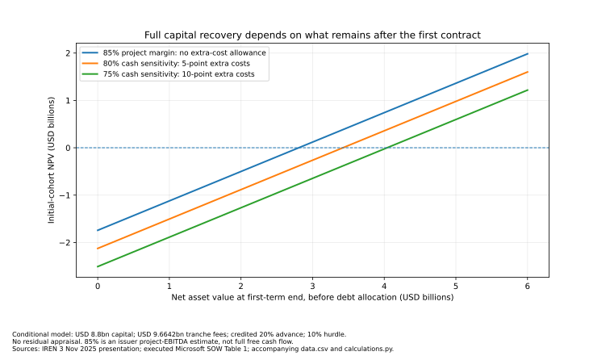

Capacity & recovery · Full investigation
Capacity that earns revenue is not yet capital that earns its cost
An accepted cluster is real commercial progress. Full recovery still depends on the whole investment, the cash clock and what comes after the first customer contract.
Real capacity. Conditional recovery.
The physical evidence strengthens the case for a real expansion, not a uniformly fictitious AI economy. It does not establish that every infrastructure investment will recover its full cost. The better-protected cases combine a creditworthy customer, reliable service and first-term payment protection. More exposed owner returns need strong renewal prices, paid utilization, affordable replacement and valuable facilities to hold together.
IREN’s Microsoft deployment at Childress makes the distinction concrete. Its original budget is $5.8bn for GPUs and ancillaries plus $2.8–3.2bn for the data center. A quick equipment-payback calculation leaves out a large part of the investment. The combined $8.6–9.0bn is still a disclosed budget—not final spending or a complete allocation of every owner cost. Sources: IREN, Microsoft partnership presentation.
At the $8.8bn midpoint and an assumed 10% required return, the normalized first term needs about $2.81bn of net end-value even when the company’s 85% project earnings measure is treated as cash. An assumed additional five percentage points of cash costs raises that requirement to about $3.42bn. Those are reverse thresholds, not appraisals, observed losses or IREN’s actual return. A functioning site and a profitable next operating cycle could supply the value; the tests below examine that serious countercase.
This investigation uses IREN as the principal new costed comparison, retains the CoreWeave contract-backed cohort and uses Core Scientific to explain facility-only economics. They are deliberately different cases, not a representative sector sample. The scope remains the U.S.-centered commercial generative/frontier-AI build-out, including global inputs where they matter. Return to the whole-pool answer.
Accepted, available, busy and paid are different states
Before a dollar announcement becomes productive compute, electrical and cooling infrastructure must be ready; servers and interconnects must arrive; the system must validate; and the customer must accept the service. Billing and collection follow their own rules. An energized building is not a complete cluster, and customer acceptance is not a measurement of useful work.
Milestones · company disclosure, August 2026
One accepted phase is not all 200 MW in operation
On a narrow screen, scroll the figure horizontally.
A megawatt measures capacity; a megawatt-hour measures energy over time. IT load covers computing equipment, while the facility also consumes power for cooling and electrical losses. Commercial utilization means capacity paid for. Electrical load, availability and useful-compute efficiency ask different questions. A reserved system can be paid for while waiting for work; a busy system can devote substantial time to communication and other necessary overhead.
The Llama 3 training report illustrates the denominator problem: a 2024 configuration with 16,384 H100s reported about 41% model-FLOP utilization and, separately, effective training time above 90%. These are not conflicting estimates of rented occupancy and are not measurements of the selected 2026 assets. MLPerf’s inference scenarios likewise retain their latency, workload and quality rules; benchmark throughput cannot establish paid production demand or a cash margin. Sources: Meta authors, The Llama 3 Herd of Models; MLCommons, MLPerf Inference Datacenter.
CoreWeave reported about 1.5 GW active and 3.7 GW contracted power at June 30, alongside $11.918bn construction in progress within $52.622bn gross property and equipment. The 40.5% active/contracted ratio is not fleet utilization; the 22.6% construction ratio is not stranded capital. Future pipeline and mixed asset vintages prevent those interpretations. Sources: CoreWeave, second-quarter results; CoreWeave, quarterly filing.
IREN’s $128.8m fiscal-year AI Cloud Services revenue, including $70.5m in the June quarter, is recognized revenue for a broader platform. Its $1bn August 26 operating ARR metric annualizes commissioned contracted capacity. These are neither the same period nor the Microsoft cohort’s full collected cash. Sources: IREN, FY2026 results.
Recovering the equipment is not recovering the whole project
Cost perimeter · not an actual return
One project. Two cost boundaries.
On a narrow screen, scroll the figure horizontally.
The facility estimate already includes its core infrastructure, density/supercluster enhancements and accelerated-delivery components. Adding those components again would double-count. The GPU bundle also includes specified deployment, servers, networking/cabling and software/licensing; a generic second network allowance should not silently duplicate them.
Owning the building removes a third-party landlord’s invoice, not the economic cost of the building, cooling and power infrastructure. The original approximately 85% project EBITDA estimate includes power, routine repairs, maintenance and direct site costs. It is not cash after recovering the entire capital outlay, financing and all owner costs. Sources: IREN, Microsoft partnership presentation.
| Cost or resource | Included treatment | What remains unmeasured |
|---|---|---|
| Direct operations and routine maintenance | Included in the 85% project measure; not deducted twice | Actual power and maintenance trajectory |
| Additional owner cash costs | Five- and ten-point cost sensitivities, not estimated cohort margins | Tax, overhead, working capital and other allocations |
| Debt financing | Separate cash-funding and carrying-cost illustrations | Actual draws, fees, reserves, hedges and amortization |
| Major equipment renewal | A separate capital stress or second-cycle outlay | When a redesign is needed and what it will cost |
| End-value | Net sale/transition value or equivalent future operating value | A realizable bid, transfer rights and full future cash costs |
IREN’s five-year hardware and twenty-year building depreciation lives are accounting estimates, not guarantees of competitive life or terminal value. Its separately reported $793.4m grant-date value for NVIDIA investment rights is noncash owner consideration associated with group GPU supplies. No Horizon allocation was established. The cash model does not allocate that amount, but does not call it economically free. This is a different transaction from the NVIDIA–SB Energy prepaid forward. Sources: IREN, annual filing.
The customer, supplier and lender use different clocks
The filed Microsoft / IE US Hardware 3 Inc. statement of work makes fees a minimum commitment after the relevant acceptance conditions, subject to exceptions. Section 3.2(e) adjusts service end dates to preserve aggregate fees after a delayed start. A benign delay therefore should not automatically erase fees at a rigid 2031 cutoff. Delivery credits and termination are separate risks. Sources: Microsoft / IE US Hardware 3 Inc., statement of work.
The original Dell transaction summary requires payment within thirty days of shipment and includes an IREN guarantee. A supplier bill can arrive before customer acceptance and net service collections. The service-end adjustment has real value but does not make this early funding requirement disappear. The customer agreement names IE US Hardware 3 Inc.; the later financing documents name IE US Hardware 3 LLC. Those documentary names are retained rather than treating every instrument as a parent obligation. Sources: IREN, transaction current report; IE US Hardware 3 / Dell Marketing LP, purchase agreement; IE US Hardware 3 LLC, credit agreement; IE US Hardware 3 LLC, note purchase agreement.
Table 1 of the statement of work gives $9.664199424bn aggregate tranche fees and $1.9328398848bn upfront payments. The advance is 20% of the same price and is credited after the first 24 service months. It is not another sale. The general ceiling is $2.6459136m higher than the tranche table; the inspected material does not reconcile that difference. The model uses the smaller table total rather than inventing extra work or receipts. Sources: Microsoft / IE US Hardware 3 Inc., statement of work.
| Item | Amount / date | Status |
|---|---|---|
| Delayed-draw facility | $1.545bn commitment; $0.413bn funded at June 30 | Conditional further draws |
| Notes | Up to $2.1bn; $0.525bn issued at June 30 | Escrow and release conditions matter |
| Full commitments + contractual advance | $5.57784bn | Hypothetical complete-funding arithmetic, not verified cash on hand |
| Share of equipment budget | 96.17% of $5.8bn | Funding coverage, not investment recovery |
| Other resources for combined midpoint | $3.22216bn before fees, reserves and other uses | Gross requirement; not a current missing-cash or insolvency claim |
Parent cash and other financing may meet the remaining requirement. Undrawn commitments and a due customer advance must not be relabeled receipts. The 6% weighted financing claim excludes fees; the notes’ 5.96% coupon, loan spread of Term SOFR plus 2.25%, and June effective accounting rates of 7.05% and 7.12% are different measures. Sources: IREN, annual filing; IREN, FY2026 results; IE US Hardware 3 LLC, credit agreement; IE US Hardware 3 LLC, note purchase agreement.
For scale only, six months at a constant 6% is $28.14m on the $0.938bn funded/issued June amount, or $109.35m on the full $3.645bn commitment. Actual draw dates, escrow earnings, repayment and hedges change cash interest. These amounts are not deducted again from the all-capital recovery test. The notes’ maturity definition includes an outside December 31, 2031 date; acceptance-adjusted repayment and an extended customer term are not themselves a lender amendment. Redacted schedules prevent a present shortfall calculation.
A recovery requirement—not an actual project IRR
The model synchronizes four phases into sixty equal service months. It puts the combined budget and full contractual advance at the modeled start, then credits the advance over months 25–60. Actual construction payments, acceptance dates, calendar hours, invoicing and collections differ. This normalization isolates the economics of a first operating term; it is not IREN’s actual calendar cash ledger.
The 85% case treats the company’s project EBITDA estimate as available cash, a favorable simplification. The 80% and 75% cases add five or ten percentage points of costs measured against the original fee base. They do not establish actual complete margins, tax burdens or sufficient allowances for every owner cost. All amounts are nominal scenario dollars; the 10% hurdle is assumed, not an estimate of IREN’s cost of capital.
Initial flow: −combined capital + contractual advance Service months 1–24: tranche fees / 60 − modeled cash costs Service months 25–60: same, minus advance / 36 At service end: any net sale or continuation value Total customer collections = tranche fees, not fees + advance
A negative net present value means the stipulated cash does not meet the stipulated return. It is not a loss already incurred, a default estimate or money necessarily owed by shareholders. Net end-value is after realization and transition costs, before allocating value between debt and equity. A sale and reuse of the same retained assets cannot both be counted.
Conditional recovery · continuation-value sensitivity
What must remain after the first contract?
On a narrow screen, scroll the figure horizontally.

| Capital perimeter | Cash-share case | NPV before end-value | Required net term-end value |
|---|---|---|---|
| Equipment only: $5.8bn | 85% | +$1.258bn | None needed within this restricted perimeter |
| Combined low: $8.6bn | 85% | −$1.542bn | $2.484bn |
| Combined midpoint: $8.8bn | 85% | −$1.742bn | $2.806bn |
| Combined high: $9.0bn | 85% | −$1.942bn | $3.128bn |
| Combined midpoint: $8.8bn | 80% | −$2.125bn | $3.423bn |
| Combined midpoint: $8.8bn | 75% | −$2.508bn | $4.039bn |
Equipment-only simple earnings payback is about 3.53 years; with the modeled credited advance, equipment-only cumulative cash becomes positive in month 31. Neither includes the facility. The combined midpoint at 85% has an undiscounted first-term deficit of $0.585bn before end-value. That does not establish that the working facility remaining at the end is worthless. These outputs also do not reproduce IREN’s approximately two-year payback claim for its newer, different three-year contracts.
In the midpoint/80% case, required net year-five value is $2.858bn at an 8% hurdle, $3.423bn at 10%, and $4.041bn at 12%. The modeled advance improves NPV by $0.549bn at 10% versus no advance, without increasing total fees. Actual capital timing matters too: a $100m reduction in the present value of costs lowers the required year-five value by $161.05m at 10%. Earlier spending moves the result the other way.
Protected total fees still have a timing cost
Conditional timing comparison
Later start, later end—not an automatically shorter contract
On a narrow screen, scroll the figure horizontally.
| Service delay | Advance receipt | NPV before end-value | Required value at shifted end |
|---|---|---|---|
| None | Modeled start | −$1.742bn | $2.806bn at year 5 |
| Six months | Modeled start | −$1.981bn | $3.346bn at year 5.5 |
| Twelve months | Modeled start | −$2.208bn | $3.912bn at year 6 |
| Twelve months | Also delayed twelve months | −$2.384bn | $4.224bn at year 6 |
The first delay rows favor the project by keeping the advance at time zero. They exclude extra construction, idle-equipment, penalty and financing costs. Actual capital staging and tranche protection can change the result in either direction. IREN describes owner-managed construction rather than one fixed-price engineering/procurement/construction package, leaving integration and cost risk with the owner. Sources: IREN, annual filing.
Reliable power can be a prerequisite for almost all service revenue; a higher power price is a different risk. For a modeled 200-MW IT deployment, annual energy equals IT MW × facility/IT power ratio × average electrical load × 8,760 hours. The ratio—PUE—and load are assumptions here, not IREN measurements or paid-utilization observations.
| Assumed PUE / load | Annual energy | Extra annual cost |
|---|---|---|
| 1.15 / 80% | 1.612 TWh | $16.1m |
| 1.20 / 90% | 1.892 TWh | $18.9m |
| 1.35 / 100% | 2.365 TWh | $23.7m |
The central increment has about $75.0m five-year present cost at 10%, with monthly payment. Hedging or pass-through can reduce exposure; load shape, demand charges and availability costs can change it. The larger sensitivities in this illustration are the capital perimeter, complete costs, timing and continuation value—not a claim that electricity is unimportant.
The IEA’s 485 TWh global data-center estimate for 2025 and approximately 950 TWh central projection for 2030 describe a wider system, not a named connection approval. Reuters reported a Texas permit pause pending a grid audit on September 21. The primary order and applicability to these phases were not established in the investigation. No shutdown of accepted Horizon 1, prohibition of all other phases or project-specific delay is inferred. Sources: IEA, Key Questions on Energy and AI; Reuters, Texas permits and grid-audit reporting.
What could the site earn after the first customer term?
A missing resale quote does not justify setting the assets to zero—or to book value. Net realization depends on hardware condition, interconnect and memory suitability, software/support, relocation costs, a paying use, power rights, cooling and tenant compatibility. Dismantled equipment, a functioning site and a continuing customer contract are different recoveries. No representative used-GB300 price curve or executable Horizon sale bid was established.
A facility-only continuation can support value without buying the next GPU generation. At 10%, with a fifteen-year monthly-paid tail and no extra initial tail capital, the midpoint/85% first term needs about $353m annual net facility cash; the 80% case needs about $431m. Net means after vacancy, property costs, maintenance capital and other relevant tail costs. These are reverse requirements, not rent forecasts.
Core Scientific’s roughly 437 billing MW and $635m associated annualized GAAP colocation revenue imply about $1.453m per billing MW-year. That is gross accounting revenue from another portfolio and contract set, not net rent for matched IT MW at Childress. Applying it as an IREN valuation multiple would erase exactly the boundaries that matter. Sources: Core Scientific, second-quarter results.
Reported accounting comparison · not GPU returns
A different margin denominator does not create more profit
On a narrow screen, scroll the figure horizontally.
The hosting comparison neither proves the required facility tail is available nor proves it impossible. It identifies what must be reconciled: net cash rather than gross billing, the same capacity denominator, the contract term, maintenance needs and the rights that transfer to a new user.
A second compute cycle has to pay for new equipment
An alternative to selling the assets is to keep the facility, renew equipment and operate for five more years. The illustration spends $5.8bn on replacement equipment plus $0.2bn on retrofit at year five. It does not also sell the retained first-cycle assets, assume another customer advance, or book residual value at year ten. These future capital costs are assumptions, not quotes.
The scale is $20m per IT MW-year—$4bn annual sales at full paid utilization for 200 MW—using the lower marker of IREN’s August claim about newer three-year contracts. A rate reported in 2026 does not establish a rate five years later. The original Microsoft fee base averages about $9.664m per IT MW-year in the service-equivalent model. Term, timing, equipment and service mix differ, so these figures are not a matched price-growth series. Sources: IREN, FY2026 results.
Second-cycle annual variable cash cost at full use is assumed to be $1.0bn, with $0.2bn fixed annual cash costs. Variable costs scale with served/paid volume, not selling price. The first term uses the midpoint budget and the 80% cash sensitivity.
| Second-cycle assumption | Annual second-cycle cash | Whole ten-year NPV |
|---|---|---|
| 90% paid utilization; price marker unchanged | $2.50bn | +$0.299bn |
| 80% paid utilization; price marker unchanged | $2.20bn | −$0.439bn |
| 65% paid utilization; price 20% lower | $1.23bn | −$2.825bn |
Conditional second cycle · not observed occupancy
More volume has a physical limit
On a narrow screen, scroll the figure horizontally.
The second term needs about $2.379bn annual net cash to cover its $6bn renewal and the first-term requirement. More useful demand can help, but a fixed cohort cannot supply unlimited additional volume. The adverse case still produces positive operating cash. Its problem is insufficient recovery of successive capital outlays at the assumed hurdle, not disappearance of every paying customer.
A separate early-renewal stress assumes $2.9bn additional equipment capital in service month 36, outside routine maintenance already charged. Its present cost at 10% is $2.179bn; it moves the midpoint/80% NPV before residual from −$2.125bn to −$4.304bn. This is not a measured failure rate or compulsory refresh. The Microsoft agreement permits negotiation of a VR200 substitution; absent agreement it does not automatically replace the existing GB300 obligation. Sources: Microsoft / IE US Hardware 3 Inc., statement of work.
Why the strong CoreWeave case is not just a resale bet
DDTL 4.0 remains the existing contract-backed comparison, not another name for the whole CoreWeave fleet. DBRS identifies Meta as the take-or-pay customer and expects roughly five years of amortization after installation. Its operating analysis includes hot/cold spares, Dell warranty coverage followed by the operator’s replacement strategy, historical uptime above 99%, and fully hedged power at two North Dakota facilities—not across the whole cohort. Sources: Morningstar DBRS, DDTL 4.0 rating rationale.
That is a credible favorable mechanism: accepted equipment stays available, the customer pays for reserved capacity, and operating cash amortizes debt before liquidation is needed. Low customer use need not reduce a valid take-or-pay invoice. Spares, warranty limits, maintenance after warranty and unhedged power exposure still matter. The 1.20-times coverage is a rating projection using private inputs, not September compliance or an owner return.
The company’s DDTL 5.5 description—about five-year financing against initial customer contracts averaging about three years—has a different renewal task. Its terms cannot inherit DDTL 4.0’s first-contract full-amortization expectation. Sources: CoreWeave, DDTL 5.5 announcement.
There is also favorable evidence against immediate hardware unsellability: on September 17, CoreWeave described new three-to-six-month contracts at about $40m annualized revenue per MW of power required by the related clusters. These are contracted short-term prices, not just advertisements. They are not a five-year guarantee, a matched IT-MW measure, a fleet-wide realized yield or a complete margin. Sources: CoreWeave, short-duration capacity-price statement.
The financing investigation retains its cash waterfall, creditor protections and conditional enforcement thresholds. This chapter adds operating and continuation constraints; it does not convert earlier hypothetical collateral recoveries into observed asset prices.
The favorable case is real—and so is the recovery constraint
The sustainable path is more specific than “AI is transformative.” Accepted capacity keeps performing; creditworthy customers pay; construction stays near budget; complete service costs remain manageable; and the retained site supports further use. A low-budget case with $8.6bn capital, an 80% first-term cash share, an 8% hurdle and $3bn net end-value gives +$0.297bn NPV. The positive replacement-cycle case is a different route, not extra value added on top of that sale scenario.
A coherent adverse case combines a 20% overrun on the $3bn facility midpoint only—raising total capital to $9.4bn—with twelve months’ delay, 10% less realized fees, costs equal to 20% of the original fee base, and $1.5bn net end-value. At 10% it gives −$3.006bn NPV. Costs do not fall proportionately with missing fees. This is a joint conditional stress, not a current loss, probability, site-delay finding or assumption that spot prices override the customer contract.
A lender may still be paid while equity misses its hurdle. A customer can absorb an expensive contracted purchase relative to new alternatives. A delivery delay can call for fresh sponsor cash before any ultimate asset loss. These outcomes should not be collapsed into one “bubble burst.”
Continuing to operate is a different decision from buying the assets anew. Once capital is sunk, running equipment can make sense when receipts exceed avoidable costs even if original owners never earn their required return. A historical investment loss does not prove the cluster should be switched off; positive current cash does not prove the historical purchase was wise.
What changed—and what would establish full recovery
The whole-pool conclusion is narrower and more useful, not reversed: real commercial activity and contractual creditor protection coexist with unproven full-cost owner recovery. The largest exposed expectations are those that need favorable post-contract prices, paid utilization, replacement cost and transferable facility value together. The strongest counterevidence would be repeated cohorts actually recovering their complete costs with durable net cash through renewal.
| Evidence to obtain | What it resolves | Important boundary |
|---|---|---|
| Final equipment/facility bills with payment dates | Budget perimeter and normalized capital timing | Parent capex is not cohort cost |
| Acceptance, credits and net collections for all phases | When service becomes collected cash | Acceptance is not GPU occupancy |
| Full cash costs and reserves over time | Whether 85/80/75% cases are realistic | Depreciation is not another cash cost after capital is charged |
| Renewals on older clusters, net of transfer/retrofit | Whether continuation requirements can be earned | Posted rental rates are not net realization |
| Site power/permit rights and transfer conditions | Whether another owner can use the facility | Regional reporting is not a site permit determination |
| Replacement cost and useful performance | The price–utilization boundary of a new cycle | Efficiency can also lower selling prices |
The earlier broad parent-company comparison and valuation examples have not been refreshed into September 22 company balances. The demand chapter’s price/cost model is not replaced by purported observed cohort margins. The financing chapter’s expected September 22 note settlement is not promoted to a confirmed cash receipt merely because the date arrived.
The NVIDIA–Energy Global prepaid forward remains an obligation with receipt unverified, not evidence of nonpayment. No $1.5bn is added to these models. The separate IREN investment rights, SB Energy support and proposed share subscription are not combined into one financing amount. Read the exact correction and its consequence.
Sources, calculations and the limits of this comparison
The underlying investigation inspected the material below on September 22, 2026. Source dates, observation periods and evidence inspection dates are distinct. PDF tables, contractual figures and cost footnotes used by the investigation were visually inspected. The analysis is document-based, not an audit of invoices or operating sites.
83 source-linked inputs and assumptions (CSV) · Recovery calculations and checks (Python) · Sensitivity figure (SVG). The reader CSV retains numerical observations, units and evidence statuses with clarified labels and source pointers. It is not a sector-size dataset. The script uses the Python standard library and frozen inputs; it does not call live services.
{kind=link}
python capacity-calculations.py --data capacity-data.csv
Missing measurements include phase-level installed GPU counts, realized GPU-hours, load, billed-to-collected cash, final facility cost, maintenance trajectories, transferable resale values and current unredacted debt schedules. No invoice audit, engineering visit, proprietary underwriting model or representative auction dataset was available. The large August IREN investor deck could not be retrieved; the accessible release, original project deck, annual filing and relevant contracts were used. Site-specific Texas permit applicability remained unresolved.
Favorable and conservative simplifications do not necessarily cancel. Initial capital ignores the actual mix of earlier and later payments. The modeled advance has an assumed receipt date. Equal months replace calendar hours. Additional cash allowances are not jurisdiction-specific tax models. The replacement cycle charges equipment capital but assumes future prices and costs. Those choices define conditional tests, not a measured project IRR or per-share valuation.
IREN, Microsoft partnership presentation
3 November 2025. Open original source.
Slides 4–5 and footnotes. Original equipment, facility and project-margin estimates; not final accounts.
Microsoft / IE US Hardware 3 Inc., statement of work
Effective 2 November 2025. Open original source.
Sections 1–3, 6, 9 and Exhibit F; Table 1. Acceptance and GPU details partly redacted. Exhibit F changes the general purchase-order terms.
IREN, transaction current report
3 November 2025. Open original source.
Item 1.01: Microsoft and Dell agreements. A transaction summary, not a receipt.
IE US Hardware 3 / Dell Marketing LP, purchase agreement
Filed contract. Open original source.
Payment and warranty provisions; not evidence of actual shipment or acceptance.
IREN, annual filing
Year ended 30 June 2026; filed 27 August. Open original source.
Horizon delivery/construction risks; accounting policies; Notes 23–24. August events remain subsequent events; group accounts are not cohort cash records.
IREN, FY2026 results
27 August 2026. Open original source.
Pages 1–2 and page 5 assumptions/notes. Revenue, annualized operating metrics, newer contracts and financing claims have different bases. The separate large investor deck was inaccessible.
IE US Hardware 3 LLC, credit agreement
29 May 2026. Open original source.
Facility/pricing terms and section 2.08; redacted schedules prevent a complete current repayment model.
IE US Hardware 3 LLC, note purchase agreement
29 May 2026. Open original source.
Sections 2–4, 8.1, 8.9 and Schedule A Maturity Date. Funding, escrow release, coupon and acceptance-adjusted repayment remain distinct.
CoreWeave, quarterly filing
30 June 2026 balance sheet. Open original source.
Cash-flow statement and property/equipment note, including PDF page 24. Group assets, not the DDTL 4.0 physical inventory.
CoreWeave, second-quarter results
11 August 2026. Open original source.
June active/contracted power and operating results; not September telemetry.
Morningstar DBRS, DDTL 4.0 rating rationale
3 April 2026. Open original source.
Transaction, operating risks and financial outlook. Solicited opinion using nonpublic inputs; projected coverage is not observed compliance.
CoreWeave, DDTL 5.5 announcement
10 August 2026. Open original source.
Initial contract terms versus financing term; not a fresh covenant audit.
CoreWeave, short-duration capacity-price statement
17 September 2026. Open original source.
Three-to-six-month contracts. The September 16 component of the distribution URL is not the issuer publication date.
Core Scientific, second-quarter results
28 July 2026. Open original source.
Mid-July billing update and colocation gross-profit reconciliation. Billing MW and annualized GAAP revenue are not matched IT capacity and net rent.
Meta authors, The Llama 3 Herd of Models
2024; served version 3. Open original source.
Pretraining efficiency and reliability. Historical example of different utilization denominators, not 2026 fleet performance.
MLCommons, MLPerf Inference Datacenter
Documentation inspected 22 September 2026, version 6.1. Open original source.
Scenarios, metrics, latency and quality requirements. Benchmark performance is not paid production utilization.
IEA, Key Questions on Energy and AI
2026 update. Open original source.
Global electricity estimate, projection and bottlenecks; not a project connection approval.
Reuters, Texas permits and grid-audit reporting
21 September 2026. Open original source.
Attributed reporting only. The primary order and its application to the selected phases were not established; no site shutdown or delay is inferred.
Continuity: whole-system assessment (broader evidence September 18), customer demand (September 19), and financing and loss transmission (September 20) remain accessible current investigations.